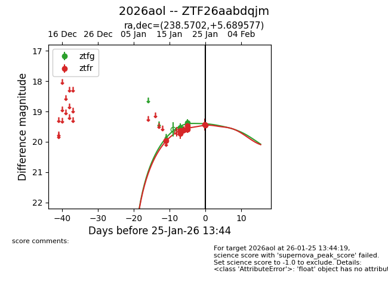
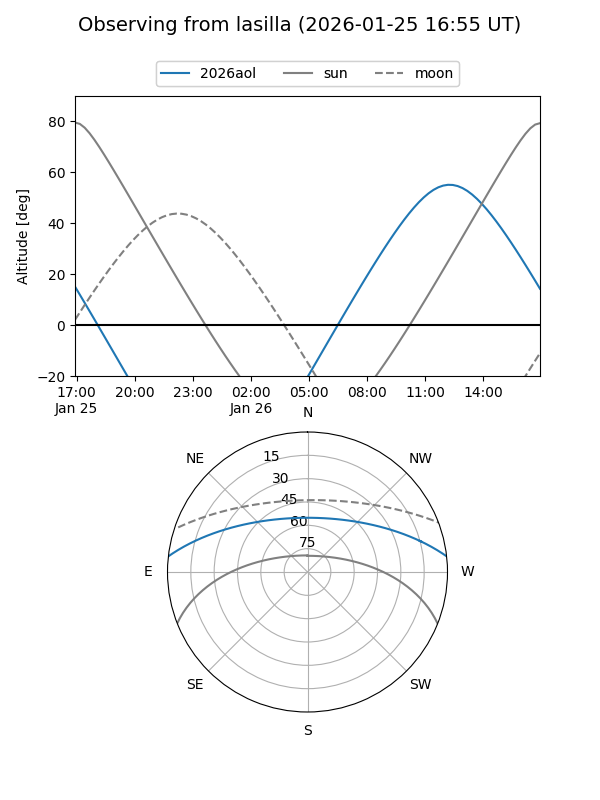
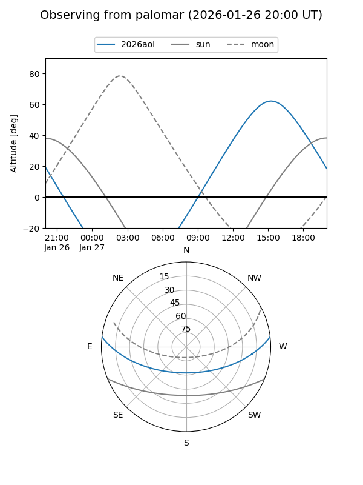
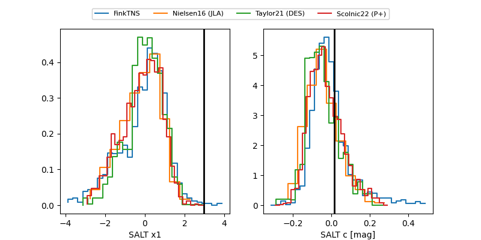

2026aol
Target 2026aol at 2026-01-20 21:21
Aliases and brokers:
FINK: link
Lasair: link
ALeRCE: link
TNS: link
YSE: link
alt names
ZTF26aabdqjm (ztf,fink_ztf)
2026aol (tns,yse)
Coordinates:
equatorial (ra, dec) = 238.5702,+5.68958
equatorial (HMS+DMS) = 15:54:16.86,+05:41:22.48
galactic (l, b) = (15.1385,+41.57545)
Flags:
Photometry:
last ztfg=19.38, ztfr=19.59
2 ztfg, 6 ztfr detections
Lightcurve

Visibility


Additional plots
